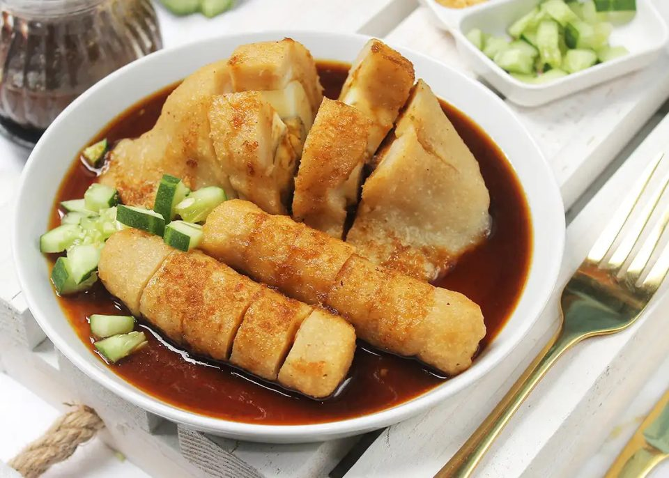
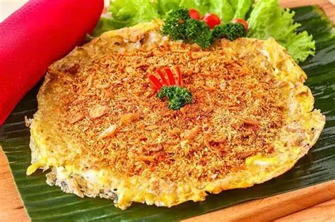
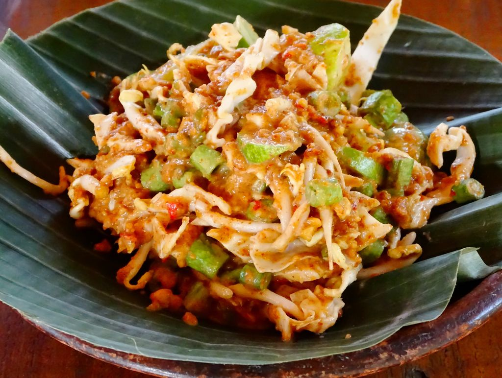

Pempek adalah makanan khas Sumatera Selatan yang terbuat dari adonan ikan dan tepung tapioka. Pempek biasanya disajikan dengan kuah cuko yang memiliki rasa manis, asam, dan pedas.

Kerak telor adalah makanan khas Betawi yang terbuat dari beras ketan putih, telur ayam atau bebek, ebi, dan kelapa sangrai. Makanan ini dimasak hingga bagian bawahnya berkerak dan biasanya disajikan dengan serundeng.

Karedok adalah makanan khas Sunda, Jawa Barat, yang terdiri dari berbagai sayuran mentah seperti kacang panjang, taoge, kol, mentimun, dan terong. Karedok disajikan dengan bumbu kacang yang gurih dan khas.